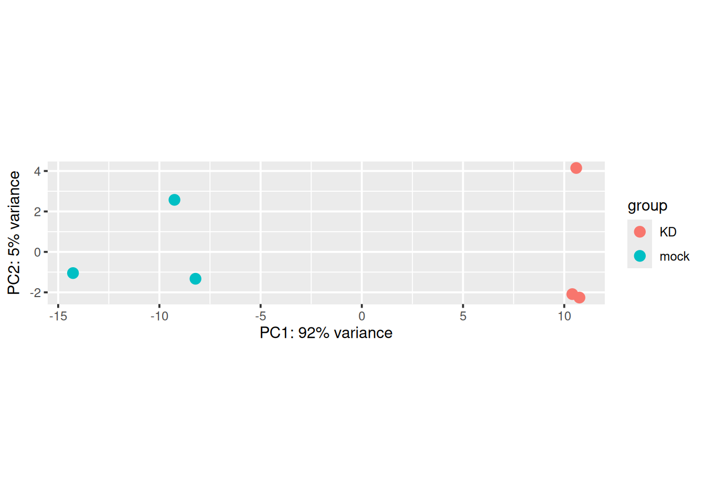
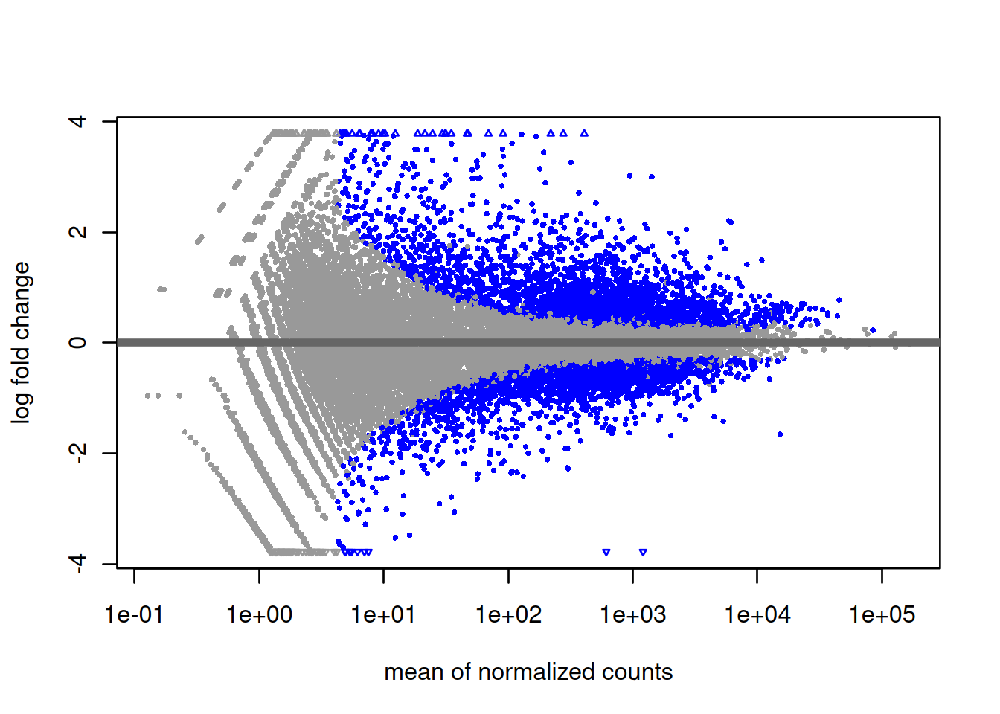
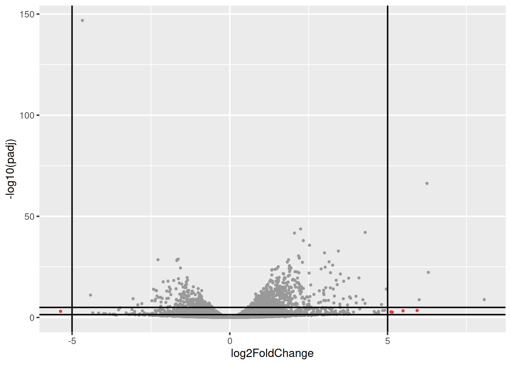
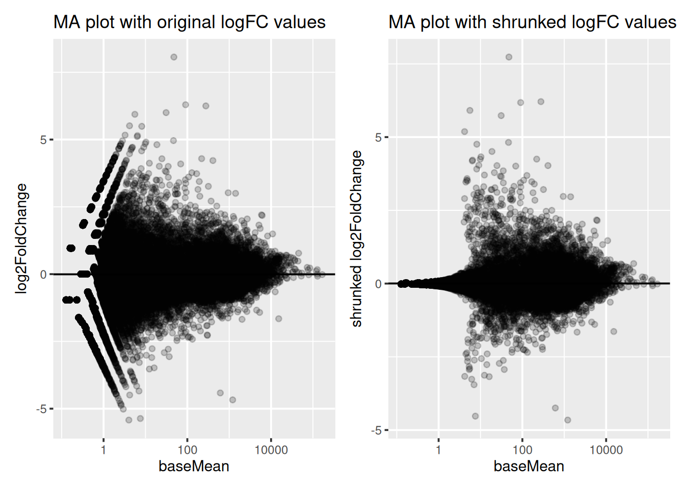

Chapter 4 Differential expression analysis
Learning Objectives
The goal of this chapter is
- to understand the different theorical concepts behind a differential expression analysis
- to provide a real-life example of DE analysis analysis running DESeq2 step-by-step
4.1 Theory behind DESeq2
A large number of computational methods have been developed for differential expression analysis (Seyednasrollah, Laiho, and Elo 2015Seyednasrollah, F, A Laiho, and LA Elo. 2015. “Comparison of Software Packages for Detecting Differential Expression in RNA-Seq Studies.” Brief Bioinform 1 (16): 59. https://doi.org/10.1093/bib/bbt086.), differing slightly in their methodology. Here we will present DESeq2, a widely used bioconductor package dedicated to this type of analysis. For more information read the original paper (Love, Huber, and Anders 2014Love, M, W Huber, and S Anders. 2014. “Moderated Estimation of Fold Change and Dispersion for RNA-Seq Data with DESeq2.” Genome Biology 15 (5): 550–58. https://doi.org/10.1186/s13059-014-0550-8.) and the DESeq2 vignette.
The starting point of the analysis is a count matrix, and the goal is to identify genes that are differentially expressed between samples.
The different steps of the analysis are illustrated in the figure below. Briefly, DESeq2 starts by estimating scaling factors. Then, it estimates the gene-wise dispersions and shrinks these estimates to generate more accurate estimates of dispersion to model the counts. Finally, DESeq2 fits a generalized linear model, performs hypothesis testing and generates a list of differentially expressed genes.

4.1.1 Size factor estimation
DESeq2 expects as an input a matrix of raw counts (un-normalised counts). These counts are supposed to reflect gene abundance (what we are interested in), but they are also dependent on other less interesting factors such as gene length, sequencing biases, sequencing depth or library composition. DESeq2 will estimate scaling factors that will be used internally to account for the “uninteresting” factors rendering the expression levels more comparable between samples.
- Gene length
As illustrated in the example below, gene 1 and gene 2 have similar levels of expression, but many more reads map to gene 2 than to gene 1. This might not be related to biology but it could just reflect the fact that gene 2 is longer. Taking into account gene lengths in the normalisation procedure is important when the purpose is to compare gene expression levels within the same sample. However, for differential expression analysis, as gene expression levels are compared between samples, it is not necessary to use gene lengths to estimate the scaling factors (it is even not recommended). It was just mentioned here for information because many RNAseq common normalisation methods such as TPM (transcripts per million), FPKM (fragments per million), or RPKM (reads per million) take into account gene lengths.

- Sequencing depth
Each sequencing experiment will produce a certain number of reads expected to be typically around tens of millions. A fraction of the raw sequencing reads will be discarded during the quality control, the alignment and the counting processes, which implies that the total number of reads for each sample will be different.
As shown in the following example, all genes seem to be expressed at higher levels in sample 1 than in sample 2, but this is likely because sample 1 has twice more reads than sample 2. Accounting for sequencing depth is necessary for differential expression analysis as samples are compared with each other.

- Library composition
The library composition might also be different across samples. To illustrate this, let’s imagine a basic cell expressing only 2 genes (genes 1 and 2) and assume that a drug treatment induces a strong expression of gene 3. If the normalisation was done using total number of reads only, then the counts of gene 1 would be divided by 15 in control cells, while it would be divided by 165 in treated cells. This would lead to the misleading conclusion that the treatment has reduced 11 times the expression of gene 1. In this case, the library composition has changed but not the expression level of gene 1.

In a real dataset, a few highly differentially expressed genes, differences in the number of genes expressed between samples, or presence of contaminations can skew library composition. Accounting for it is highly recommended for accurate comparison of expression between samples (Anders and Huber 2010Anders, S, and W Huber. 2010. “Differential Expression Analysis for Sequence Count Data.” Genome Biology 11 (27): 10. https://doi.org/10.1186/gb-2010-11-10-r106.).
- DESeq2 normalisation method
DESeq2 will estimate size factors in a way that takes into account both library size and library composition, using the median of ratios method:

Let’s try to understand what is behind this formula.
Step 1: DESeq2 creates a pseudo-reference sample by calculating a row-wise geometric mean (for each gene). Geometric mean is used instead of classical mean because it uses log values. It is hence more robust as it is less influenced by extreme values.
Step 2: For every gene in every sample, ratios of counts/pseudo-reference sample are calculated.
Step 3: The median value of all ratios for a given sample is taken as the scale factor for that sample. Importantly, the method is based on the assumption that the majority of genes are not differentially expressed, which implies that rare genes that are really up-regulated or down-regulated should not influence the median. Furthermore, the median is calculated skipping genes with a geometric mean of zero. This will hence automatically eliminate genes expressed in some samples but not in others and will help to focus the scaling factor on housekeeping genes.
Step 4: Normalised counts can be obtained by dividing each raw count values in a given sample by that sample’s scaling factor.

4.1.2 Count modeling
Let’s first have a look at the counts distribution for a typical RNAseq sample:

It is obvious that the count data is not normally distributed. Counts are integer values, always positive, and we observe a large number of genes with low counts (or counts about zero), and a few number of genes with a very high count level.
As seen in the WSBIM1322 course with the example of the coin toss, count data are often modelised by a binomial distribution with parameters n and p where p is the discrete probability distribution of the number of successes in a sequence of n independent experiments. In an RNAseq experiment, p would be the probability of getting a read associated to a particular gene given that n total number of reads were sequenced in the experiment. However, when n is large and p is low, Poisson distribution is used instead of binomial. It describes typically the distribution of a rare event in a large population, which fits better to RNAseq. Indeed, for each sample, the total number of reads tends to be in millions, while the counts per gene can vary considerably but tend to be in tens, hundreds or thousands. Therefore, the chance of a given read to be mapped to any specific gene is extremely small.
The Poisson distribution has only one parameter indicating its expected mean. Its variance and all other properties follow from it. In particular, one key assumption of the Poisson distribution is that the variance equals the mean.
\[K_{ij} \sim P(µ_{ij} = \sigma^2_{ij})\]
Applying a Poisson distribution to Rnaseq counts holds true when comparing technical replicates from a same sample, where the variance only reflects the counting noise. But when comparing biological replicates, counting noise is not the only source of variance. The observed count values for each gene within biological replicates fluctuate more importantly, due to the combination of biological and technical factors: inter-individual variations in gene expression, sample purity, cell reponses to environment (e.g. heat-shock)… Due to this overdispersion, the Poisson distribution doesn’t fit that well to RNAseq counts.
Actually, RNAseq counts are better modelised by an alternative distribution, the negative-binomial. It is derived from the Poisson distribution but the negative-binomial distribution has, in addition to the mean parameter, an extra parameter \(α\) called the “dispersion” parameter to model this “extra” variance that is empirically observed in RNA-Seq experiments.
\[K_{ij} \sim NB(mean = µ_{ij}, dispersion = \alpha_i)\]
The dispersion parameter \(\alpha_i\) defines the relationship between the variance of the observed count and its mean value7 Note that as dispersion parameter gets lower and lower, the variance converges to the same value as the mean, and the negative binomial turns into a Poisson distribution..
\[VAR(K_{ij}) = µ_{ij} + \alpha_i.µ_{ij}^2\]
Having modelised counts by a negative-binomial distribution, next step is to estimate, for each gene, the two parameters of the distribution (mean and dispersion). The mean will be estimated easily from the observed normalised counts in both conditions, but the dispersion is not that trivial to estimate accurately.
4.1.3 Dispersion estimation
Dispersion is a measure of variability in the data (\(α = CV^2\)). A gene with a dispersion value of 0.04 means 20% variation around the expected mean. Estimate the dispersion for each gene would be quite straightforward if we had for each condition, hundreds of replicates. Of course, this is not feasible for economic reasons, and experiments are often done on only 3 replicates. But how to estimate dispersion reliably based on such a little number of samples? To overcome this problem, DESeq2 makes the assumption that genes of similar expression levels have similar dispersions and it will use information coming from other genes expressed at similar level.
Step1: Dispersion for each gene is estimated separately. An initial estimation of dispersion for each gene is first estimated using maximum likelihood estimation. In other words, given the count values of the replicates, the most likely estimate of dispersion is calculated. For each gene, the dispersion estimate is plotted in function of the mean expression level (mean counts of replicates). This produce the so-called “dispersion plot” where each gene is represented by a black dot.

Note that the dispersion plot highlights an intrinsic feature of RNAseq data: genes with low read counts show substantially higher dispersion than highly expressed genes.
Step 2: A curve is fitted to gene-wise dispersion estimates. A curve is fitted (displayed as a red line in the dispersion plot), which represents the estimate for the expected dispersion value for genes of a given expression strength. The idea behind fitting a curve to the data is that different genes will have different scales of biological variability, but, over all genes, there will be a distribution of reasonable estimates of dispersion.
Step 3: Shrinkage of gene-wise dispersion estimates toward the values predicted by the curve. Initial gene-wise dispersion estimates will be shrinked (by an empirical Bayes approach) towards this fitted curve to obtain the final dispersion estimates. The strength of the shrinkage for each gene will depend on how close the dispersion values are from the curve, and on the number of samples available (the more sample (as the sample size increases, the shrinkage decreases in strength, and eventually becomes negligible). adjusted dispersion values are represented by the blue dots in the dispersion plot. For a certain number of genes, the adjusted dispersion will be significantly increased and this will limit the number of false-positive that could arise from an underestimated dispersion. Dispersion estimates that are slightly above the curve are also shrunk toward the curve. However, genes with extremely high dispersion8 genes with extremely high dispersion are those for which the adjusted dispersion is more than 2 residual standard deviations above the curve. values are not. In fact DESeq2 assumes that these genes might not follow the modeling assumptions and could have higher variability than others for biological or technical reasons. For these genes, shrinking the values toward the curve could result in false positives. These genes are shown surrounded by blue circles in the dispersion plot.
Dispersion shrinkage is particularly important to reduce false positives in the differential expression analysis.

4.1.4 Generalized linear model
DESeq2 fits a generalized linear model of the form: \[log2(q_{ij}) = \Sigma x_j.β_i\]
where the parameter \(q_{ij}\) is proportional to the expected true concentration of gene i for sample j:
\[ q_{ij} = \frac{µ_{ij}}{SizeFactor_{j}} \] and \(β_i\) represents the log2FC between conditions. \(β_i\) coefficients are computed from the data.
In the case of a simple design with one condition (a treatment effect for example), the model can be written
\[log2(q_{ij}) = \beta_0 + \beta_1.x_j + \epsilon\]
\(\beta_0\) is the log2 expression level in the reference (control samples)
\(\beta_1\) is the log2FC between treated and control cells
\(x_j\) = 0 if sample j is the control sample
\(x_j\) = 1 if sample j is the treated sample
4.1.5 Hypothesis testing
The logFC are computed from the data using the GLM, and these are associated to standard errors that depend on the variance of the counts.

The ultimate goal of a test for differential expression is to decide whether, for a given gene, an observed difference in read counts is significant, that is, whether it is greater than what would be expected just due to natural random variation.
The null hypothesis \(H_0\) is that there is no differential expression across the sample groups, which is the same as saying that the log2FC = 0. A statistical test, the Wald test, will determine whether the data provides sufficient evidence to conclude that this value is really different from zero.
For the Wald test, the log2 fold-change is divided by its standard error, resulting in a z-statistic. The z-statistic is compared to a standard normal distribution, and a p-value is computed reporting the probability that a z-statistic at least as extreme as the observed value would be selected at random. In principle, if this p-value is small (below a certain cutoff) the null hypothesis is rejected.
4.1.6 Multiple testing correction
Recall that a pvalue of 0.05 means that there is only 5% chance of getting this data if no real difference existed (if \(H_0\) was really true). In other words, choosing a cut off of 0.05 means there is 5% chance that the wrong decision is made (resulting in a false positive). But remember the problematic of multiple testing seen in chapter 7 from WSBIM1322 course.
In a typical RNAseq differential expression analysis, we might have about 20,000 genes to test and usually only a fraction of genes is really differentially expressed. Imagine a drug treatment that modifies the expression of about 1000 genes, but that has no impact on the other ones. The first histogram shows how the distribution of pvalues for truly modified genes (\(H_0\) is false) would look like: most of the pvalues would be very small. Using a pvalue cutoff of 0.05 should permit to identify most of these differentially expressed genes. The second histogram shows the distribution of pvalues for unmodified genes (\(H_0\) is true). Here the p-values are uniformly distributed between 0 and 1, and we can see that 5% of these genes appear to be significant even though this is only by chance as the drug had no real effect on them. But 5% of 19000 genes means … 950 false positive genes! Hence, pvalues obtained from the Wald test must be corrected for multiple testing to avoid excess false positives.
By default DESeq2 uses Benjamini-Hochberg method to adjust pvalues. The third histogram bellow illustrates the principle behind this False discovery rate (FDR) adjustment. As differential expression analysis is done on the whole set of genes, the resulting pvalues will have a distribution corresponding to the combination of both histograms. Most of the p-values are uniformly distributed between 0 and 1 but there is a spike to the left close to zero, due to those p-values for which \(H_0\) is false. The correction approach helps to estimate how many of the significant values are actually false positives. It tries to find the height where the p-value distribution flattens out (corresponding to the red line) and incorporates this height value into the calculation of FDR adjusted p-values.
Choosing a cut off of 0.05 for padjusted values now implies that 5% of significant tests (but not 5% of all tests as before) will result in false positives.

4.1.7 Independent filtering
Multiple testing adjustment tends to be associated with a loss of power. To counteract this effect, one possibility is to filter out those tests from the procedure that have no, or little chance of showing significant evidence, without even looking at their test statistic. Genes with very low counts are typically not likely to be significant due to high dispersion. However, these genes have an influence on the multiple testing adjustment, whose performance improves if such genes are removed. By removing the weakly-expressed genes from the input to the FDR procedure, more significant genes can be found among those that are kept, and this improves the power of the test. This approach is known as independent filtering.
DESeq2 uses as filtering criterion the mean of normalised counts. Genes with a mean expression value under a certain threshold are removed. Such filtering is permissible only if the filter criterion is independent of the actual test statistic, otherwise, the filtering would invalidate the test and consequently the assumptions of the FDR procedure. This is why filtering is done on the average expression over all samples, irrespective of biological condition: this filter is blind to the assignment of samples to the treatment and control group and hence independent.
The mean expression threshold used by DESeq2 for independentfiltering is defined automatically by the software. It is chosen in a way that maximizes the number of genes which will have a significant p-adjusted value. The threshold chosen (the vertical line) is the lowest quantile for which the number of rejections is within 1 residual standard deviation to the peak of the curve.

4.2 Running DESeq2
Let’s start by installing the DESeq2 package.
We will run a DESeq2 analysis using real data.
4.2.1 Construct DESeqDataSet object
Let’s first load the count matrix and the sample metadata. This dataset corresponds to RNAseq data from a cell line treated or not by a siRNA.
## Cell Type Condition
## sample1 Cell1 Epithelial mock
## sample2 Cell1 Epithelial mock
## sample3 Cell1 Epithelial mock
## sample4 Cell1 Epithelial KD
## sample5 Cell1 Epithelial KD
## sample6 Cell1 Epithelial KD## sample1 sample2 sample3 sample4 sample5 sample6
## ENSG00000223972 0 0 0 0 0 1
## ENSG00000227232 14 28 17 40 16 13
## ENSG00000278267 8 4 3 1 1 6
## ENSG00000243485 0 0 0 0 0 0
## ENSG00000284332 0 0 0 0 0 0
## ENSG00000237613 0 0 0 0 0 0## [1] 58735 6Using these data, we will start by creating a DESeqDataSet, which is a subclass of RangedSummarizedExperiment used by the DESeq2 package to store the read counts and the intermediate estimated quantities during statistical analysis. The DESeqDataSet class enforces non-negative integer values in the count matrix stored as the first element in the assay list. In addition, a formula which specifies the design of the experiment (the variables that will be used in modeling) must be provided.
## converting counts to integer mode## Warning in DESeqDataSet(se, design = design, ignoreRank): some variables in
## design formula are characters, converting to factors## class: DESeqDataSet
## dim: 58735 6
## metadata(1): version
## assays(1): counts
## rownames(58735): ENSG00000223972 ENSG00000227232 ... ENSG00000277475
## ENSG00000268674
## rowData names(0):
## colnames(6): sample1 sample2 ... sample5 sample6
## colData names(3): Cell Type ConditionAs for SummarizedExperiments (see chapter 3 from WSBIM1322 course):
- The Quantitative data can be accessed with
assay(). - The sample (columns) metadata can be access with the
colData()function. - The features (rows) metadata can be access with the
rowData()column. - Additional metadata describing the overall experiment can be
accessed with
metadata().
► Question
Access the count data from the dds object and plot the count distributions of each sample.
► Solution
The count matrix contains many rows with only zeros. We can start by removing these rows of the dds object as anyway no statistical test can be done on these genes that have no variation in their counts (equal to 0 in all samples).
It is not necessary to pre-filter low count genes before running
the DESeq2 functions, but by removing rows containing only zeros, we reduce the
memory size of the dds object and increase the speed of the analysis.
Additional filtering to improve power will be applied later.
## [1] 32102 64.2.2 Run DESeq2
The standard differential expression analysis steps are wrapped into a single
function DESeq(). This function will automatically run the following other functions:
estimateSizeFactors()(estimation of size factors)estimateDispersions()(estimation of dispersion)nbinomWaldTest()(Negative Binomial GLM fitting and Wald statistics)
## estimating size factors## estimating dispersions## gene-wise dispersion estimates## mean-dispersion relationship## final dispersion estimates## fitting model and testing4.2.3 PCA
Before anything else, a good practice is to explore the data and perform quality controls checks.
It is highly recommended to starts by a PCA to assess overall similarity between the samples:
Which samples are similar/different to each other?
Does this fit to the expectation from the experiment’s design?
Are they any sample outliers which may need to be explored further?
► Question
Here are 3 examples of PCAs that correspond to different experimental designs. How would you interprete these PCAs and what impact could they have on the analysis?


Remember that if one performs PCA directly on a matrix of normalised read counts,
the result typically depends only on the few most strongly expressed genes
because they show the largest absolute differences between samples.
A simple and often used strategy to avoid this is to take the logarithm of the
normalised count values plus a small pseudocount; however, now the genes with
low counts tend to dominate the results because, due to the strong Poisson noise
inherent to small count values, they show the strongest relative differences
between samples. As a solution, DESeq2 offers the regularized-logarithm
transformation rlog().
For genes with high counts, the rlog transformation
differs not much from an ordinary log2 transformation. However for genes with
lower counts, the transformation moderates the variance across the mean,
shrunking the values towards the genes’ averages across all samples.
See ?rlog for more details about the function.
► Question
ENSG00000198804 and ENSG00000248671 are two genes expressed respectively at a very high and a very low level. Inspect the effect of the rlog transformation on the counts of these genes. Compare to counts that would be transformed by a classical log transformation (You can use the
normTransform()function to normalise and log-transform the dds counts)Draw a scatter plot representing the log counts of sample1 versus the log counts of sample2 (sample1 and sample2 are 2 control replicates). Draw another scatter plot representing the “rlog transformed” counts of sample1 versus the “rlog transformed” counts of sample2. Compare the two plots.
► Solution
The plotPCA() function can then be used on the transformed counts to generate a PCA.
## using ntop=500 top features by variance
Note that the argument returnData = TRUE can be used to obtain a dataframe of PC1 and PC2
for custom plotting.
## using ntop=500 top features by variance4.2.4 Inspecting size factors
It is also advisable to investigate any systematic bias in the sequencing data, such as
whether one sample has been sequenced more deeply than others. One can extract size factors
using the sizeFactors() function.
Usually these size factors should vary around 1, indicating comparable sequencing depth.
## sample1 sample2 sample3 sample4 sample5 sample6
## 0.7268826 1.3086639 1.0773676 0.9660247 1.0421106 1.0126638► Question
Compare Size Factors to sequencing depth.
► Solution

4.2.5 Dispersion plot
Plotting the dispersion estimates is a useful diagnostic. This dispersion plot is typical, with the final dispersion, estimates shrunk from the gene-wise estimates towards the fitted estimates.

► Question
Create a new fictive DESeqDataSet object containing only 2 replicates of each condition instead of the 3 replicates that we have in our
ddsobject. Inspect its dispersion plot and compare it with the dispersion plot ofdds.Using the
dispersions()function, you can acceed to the dispersion values. Compare on a scatter plot the dispersions values obtained with 2 replicates and with 3 replicates.
► Solution

4.2.6 DESeq2 results
The resultsNames() function gives the names of results that can be extracted.
Note that by default, R will choose a reference level for factors based on alphabetical
order. Here KD condition was hence set arbitrarily as the reference level. This means
that the fold changes evaluated for every gene will correspond to their expression level
in mock cells versus their expression level in KD cells.
## [1] "Intercept" "Condition_mock_vs_KD"## [1] mock mock mock KD KD KD
## Levels: KD mockIn this case, it seems more logical to use mock cells as reference.
Reference levels can be changed using the relevel() function. But in this
case don’t forget to re-run DESeq() function after the re-leveling operation.
## [1] "Intercept" "Condition_KD_vs_mock"Results can then be extracted using the results() function.
The name parameter must be an element of resultsNames(object) specifying the
samples to compare.
Note that the contrast argument of results() can also be used to
extract results of interest. In this case, the two following commands will give
the same results9 Using the name argument is however necessary to extract specific
coefficients from more complex designs..
Let’s inspect the results and their signification.
## # A tibble: 32,102 × 7
## ENSEMBL baseMean log2FoldChange lfcSE stat pvalue padj
## <chr> <dbl> <dbl> <dbl> <dbl> <dbl> <dbl>
## 1 ENSG00000223972 0.165 0.964 4.08 0.236 0.813 NA
## 2 ENSG00000227232 21.0 0.296 0.540 0.548 0.583 0.739
## 3 ENSG00000278267 4.13 -1.04 1.14 -0.906 0.365 NA
## 4 ENSG00000238009 3.49 -1.69 1.22 -1.39 0.165 NA
## 5 ENSG00000233750 10.2 -0.519 0.702 -0.739 0.460 0.642
## 6 ENSG00000268903 19.4 -0.630 0.606 -1.04 0.298 0.489
## 7 ENSG00000269981 18.1 -1.19 0.561 -2.12 0.0343 0.104
## 8 ENSG00000239906 0.229 -0.959 4.08 -0.235 0.814 NA
## 9 ENSG00000241860 3.34 -0.982 1.23 -0.799 0.424 NA
## 10 ENSG00000279928 0.255 -1.62 4.05 -0.399 0.690 NA
## # ℹ 32,092 more rowsbaseMean: The average of the normalised count values taken over all samples.
log2FoldChange: Fold-change between the comparison and control groups, reported on a logarithmic scale to base 2. In this case, as we are testing the “Condition_KD_vs_mock” coefficient, positive log2FC indicates a gene up-regulated in the KD condition compared to the mock condition, while a negative log2FC indicate a down-regulation.
lfcSE: The standard error estimate for the log2FoldChange estimate
stat: The value of the test statistic for the gene
pvalue: The pvalue of the test for the gene
padj: pvalue adjusted for multiple testing
► Question
Inspect the results table and identify the 5 “best genes” showing the lowest padjusted value.
Calculate the mean expression level of these 5 “best genes” using the function
counts(). Compare with baseMean values.Extract the ß coefficient of these 5 “best genes” from the GLM using the function
coefficients(). Compare with log2FoldChange values.Using the function
counts(), evaluate the mean expression levels of these 5 “best genes” in mock cells. Compare with ß coefficients.Evaluate the mean expression levels of these 5 “best genes” in KD cells. Compare with ß coefficients.
How many genes have no padjusted value? Why?
► Solution
4.2.7 Independent filtering exploration
The filtering threshold that has been used to filter low count genes can be extracted from the results metadata.
## 48.46939%
## 4.215383This means that genes whith basemean < 4.215383 have been filtered. This represents 48.46939% of all tested genes!
Remember that the filtering threshold has been fixed in a way that maximizes the number of genes which will have a significant padjusted value.
We can plot the number of rejections over the basemean quantiles. The threshold chosen (red vertical line) is the lowest quantile for which the number of rejections is within 1 residual standard deviation to the peak of the curve.
as_tibble(metadata(res)$filterNumRej) %>%
ggplot(aes(x = theta, y = numRej)) +
geom_point() +
geom_vline(xintercept = 0.484,
color = 'red')► Question
Re-run the results() function on the same dds object, but set the independent filtering parameter to FALSE. Check how many genes have no padj?
Compare the number of significant genes obtained with and without independent filtering
Imagine another way of filtering genes with very low counts
► Solution
4.2.8 p-values distribution
Another useful diagnostic plot is the histogram of pvalues. It can give you an immediate idea of the proportion of genes differentially expressed, (the taller the is the left peak, the more p-values are close to 0 and therefore significant). Furthermore, it gives an idea of how the test behaved across all your hypotheses, and immediately diagnoses some potential problems.
► Question
What do you think about the pvalues histogram?
► Solution
4.2.9 MA plot
Another interesting plot is the MA-plot (“Mean-Average” plot), a scatter plot of log2FC versus the mean of normalised counts. Genes with a padjusted value lower than 0.05 are colored. The plot highlights the fact that genes with low read counts show substantially higher variability than highly expressed genes, resulting in a strong log2FC even though are likely not really differentially expressed. In the MA-plot, we hope to observe some genes located in the upper/lower right quadrant of the plots (the most interesting candidates).

4.2.10 Volcano plot
Drawing a volcano-plot is also informative to have a global view on the results. Recall that the most interesting features are those towards the top corners given that they have small pvalues and large fold-changes.
res_tbl %>%
filter(!is.na(padj)) %>%
ggplot(aes(x = log2FoldChange, y = -log10(padj),
color = padj < 0.05 & abs(log2FoldChange) > 1)) +
scale_colour_manual(values = c("gray", "red")) +
geom_point(size = 0.5) +
geom_hline(yintercept = -log10(0.05)) +
geom_vline(xintercept = 1) +
geom_vline(xintercept = -1) +
theme(legend.position = "bottom")
4.2.11 Count plots
It may be also useful to check the validity of the analysis by simply assessing the expression levels of the most highly differentially expressed genes.
best_genes <- res_tbl %>%
arrange(padj) %>%
head(6)
as_tibble(counts(dds[best_genes$ENSEMBL, ], normalize = TRUE),
rownames = 'ENSEMBL') %>%
pivot_longer(names_to = "sample", values_to = "counts", -ENSEMBL) %>%
left_join(as_tibble(coldata, rownames = "sample")) %>%
ggplot(aes(x = sample, y = counts, fill = Condition)) +
geom_bar(stat = 'identity', color = "gray30") +
facet_wrap( ~ ENSEMBL, scales = "free", ncol = 3) +
theme(axis.text.x = element_text(size = 7, angle = 90),
axis.title.x = element_blank(),
legend.position = "right",
legend.text = element_text(size = 7),
legend.title = element_text(size = 7))## Joining with `by = join_by(sample)`► Question
- Identify and inspect counts of the genes plotted in red in the following volcano-plot. These genes have a very large log2FC (|log2FC| > 5) but are far from bearing the lowest padjusted value (their padjusted value is between 0.05 and 1e-5).

Compare counts with previous counts plots (counts of genes with lowest pvalues). what is the most striking?
Using the
dispersions()function, compare dispersion values for both group of genes
► Solution
4.2.12 Logfoldchange shrinkage
The fold-changes values might sometimes be used for specific downstream analyses (these values could for example be used for gene ranking or visualization). But the Log2FC estimates provided by DESeq2 should not be used directly, as some genes might be associated to large fold-changes reflecting a high variability rather than true strong differences.
To overcome this problem, DESeq2 provides a shrinkage function called
lfcShrink(), to generate more accurate Log2foldchange estimates.
The function will shrink the fold-change values in a way that will depend
on counts and on gene dispersion values10 The shrinkage is based on bayesian approach. See the paper
describing thedefault shrinkage estimator for more details (Zhu, Ibrahim, and Love 2019Zhu, A, G J Ibrahim, and M I Love. 2019. “Heavy-Tailed Prior Distributions for Sequence Count Data: Removing the Noise and Preserving Large Differences.” Bioinformatics 35 (1): 2084–92. https://doi.org/10.1093/bioinformatics/bty895.). As seen in the following
MA-plots, the shrinkage is much stronger for lowly than for highly expressed genes.
This procedure improves interpretability of the fold-changes estimates.
res_shr <- lfcShrink(dds, coef = "Condition_KD_vs_mock")
res_shr_tbl <- as_tibble(res_shr, rownames = "ENSEMBL")
fig1 <- ggplot(res_tbl, aes(x = baseMean, y = log2FoldChange)) +
geom_point(data = res_tbl, alpha = 0.2) +
scale_x_log10() +
geom_hline(yintercept = 0) +
ggtitle("MA plot with original logFC values")
fig2 <- ggplot(res_shr_tbl, aes(x = baseMean, y = log2FoldChange)) +
geom_point(data = res_shr_tbl, alpha = 0.2) +
scale_x_log10() +
geom_hline(yintercept = 0) +
ylab("shrunked log2FoldChange") +
ggtitle("MA plot with shrunked logFC values")
fig1 | fig2
► Question
Genes ENSG00000183055 and ENSG00000161082, highlighted in the following MA plots, have similar expression levels and log2FoldChanges before shrinkage.
Compare DESeq2 results for these 2 genes before and after logFC shrinkage. What was the impact on their log2FoldChange values? on their p-values?
Try to figure out why one of the 2 genes is more affected by the shrinkage procedure.
► Solution
4.2.13 Adding gene annotations
The result table only uses Ensembl gene IDs, but gene names may be more informative.
AnnotationDbi is an R package that provides an interface for connecting
and querying various annotation databases.
There are a many organism-specific orgDb packages, such as org.Hs.eg.db
for human and org.Mm.eg.db for mouse.
#BiocManager::install(c("AnnotationDbi", "org.Hs.eg.db"))
library("AnnotationDbi")
library("org.Hs.eg.db")The keytypes() function can help us to see what information we can extract
from the database (ENSEMBL gene ID, gene symbol, gene name, …)
## [1] "ACCNUM" "ALIAS" "ENSEMBL" "ENSEMBLPROT" "ENSEMBLTRANS"
## [6] "ENTREZID" "ENZYME" "EVIDENCE" "EVIDENCEALL" "GENENAME"
## [11] "GENETYPE" "GO" "GOALL" "IPI" "MAP"
## [16] "OMIM" "ONTOLOGY" "ONTOLOGYALL" "PATH" "PFAM"
## [21] "PMID" "PROSITE" "REFSEQ" "SYMBOL" "UCSCKG"
## [26] "UNIPROT"We can easily extract information from this database using the mapIds() function.
# Retrieving the gene symbol of our "best genes"
mapIds(x = org.Hs.eg.db,
keys = selected_genes$ENSEMBL,
column = "SYMBOL",
keytype = "ENSEMBL")## 'select()' returned 1:1 mapping between keys and columns## ENSG00000127129 ENSG00000112499 ENSG00000171004 ENSG00000257859 ENSG00000157368
## "EDN2" "SLC22A2" "HS6ST2" "CASC18" "IL34"# Retrieving the ENTREZID of our "best genes"
mapIds(x = org.Hs.eg.db,
keys = selected_genes$ENSEMBL,
column = "ENTREZID",
keytype = "ENSEMBL")## 'select()' returned 1:1 mapping between keys and columns## ENSG00000127129 ENSG00000112499 ENSG00000171004 ENSG00000257859 ENSG00000157368
## "1907" "6582" "90161" "101929110" "146433"Let’s add gene symbols and ENTREZID in our table of results.
res_tbl <- res_tbl %>%
mutate(gene = mapIds(org.Hs.eg.db, ENSEMBL, "SYMBOL", "ENSEMBL")) %>%
mutate(ENTREZID = mapIds(org.Hs.eg.db, ENSEMBL, "ENTREZID", "ENSEMBL")) %>%
dplyr::select(ENSEMBL, gene, ENTREZID, everything()) %>%
arrange(padj)## 'select()' returned 1:many mapping between keys and columns
## 'select()' returned 1:many mapping between keys and columns## # A tibble: 32,102 × 9
## ENSEMBL gene ENTREZID baseMean log2FoldChange lfcSE stat pvalue
## <chr> <chr> <chr> <dbl> <dbl> <dbl> <dbl> <dbl>
## 1 ENSG00000101856 PGRMC1 10857 1209. -4.67 0.178 -26.2 8.24e-152
## 2 ENSG00000177494 ZBED2 79413 277. 6.25 0.351 17.8 6.25e- 71
## 3 ENSG00000136159 NUDT15 55270 630. 2.24 0.154 14.6 3.32e- 48
## 4 ENSG00000175315 CST6 1474 220. 4.29 0.300 14.3 2.20e- 46
## 5 ENSG00000128245 YWHAH 7533 2692. 2.05 0.144 14.2 5.64e- 46
## 6 ENSG00000113272 THG1L 54974 381. 2.33 0.171 13.6 3.45e- 42
## 7 ENSG00000213853 EMP2 2013 506. 2.53 0.191 13.2 8.45e- 40
## 8 ENSG00000115107 STEAP3 55240 193. 3.44 0.271 12.7 7.18e- 37
## 9 ENSG00000008513 ST3GA… 6482 1419. 3.00 0.240 12.5 6.39e- 36
## 10 ENSG00000105855 ITGB8 3696 6134. 2.18 0.178 12.2 2.26e- 34
## # ℹ 32,092 more rows
## # ℹ 1 more variable: padj <dbl>Below, we store these results and the DESeqDataSet object for the
next chapter.
4.2.14 Further links
iSEE is a Bioconductor package that provides an interactive Shiny-based graphical user interface for exploring data stored in SummarizedExperiment objects.
Glimma is a Bioconductor package that generates interactive visualisations for analysis of RNA-sequencing data using output from limma, edgeR or DESeq2 packages in an HTML page. The interactions are built on top of the popular static representations of analysis results in order to provide additional information.
Page built: 2024-11-01 using R version 4.4.1 (2024-06-14)